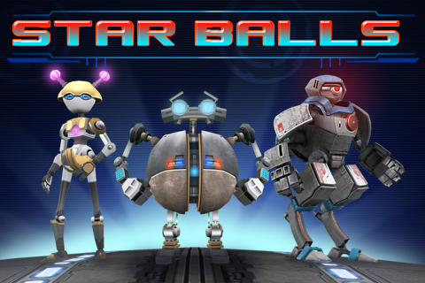
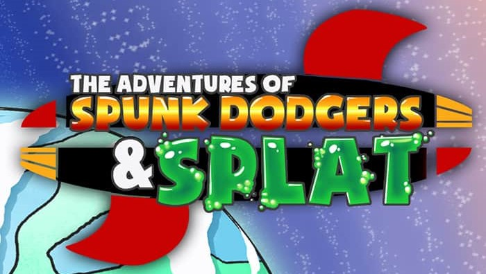
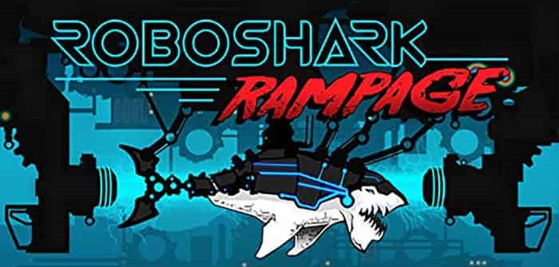

Bolder Games
Lead Game Developer
As of June 2021, I have been working as a generalist developer at Bolder Games. My duties have included and include working as a software engineer for its third party contracts and clients, programming upcoming titles and prototypes, remastering previous titles for resubmission to various platforms, developing plugin content for various game engine marketplaces, standardizing codebases for previous, present, and future projects and products, developing and designing in-house code libraries, game mechanics, and systemization protocols. At Bolder Games, the title of Lead is on a per-project basis and I have had the pleasure of leading development on projects as well as worked with the leadership of other talented developers. Some of the contracts the company works on are currently still under NDA, but I look forward to sharing the work I've done on them once I can!
As of December 2021, with the releases of the company's three remastered titles, I now work in the prototype development cycle that iterates each month. During these cycles we really target "finding the fun" given a few ideas and mechanics as a mold for the potential of the project. I hope that some of these will make it out of the woods so I can show all of you the wonderful titles the studio is conjuring! If you would like to know more about the work accomplished in these, please refer to the Bolder Games prototype page in my portfolio.
Starballs
Starballs was released for a handful of platforms in 2015. The impressive game had its own custom systems such as UI, physics, and more. My duties for this game definitely exceeded the other titles' complexity, as I not only changed its systemization logic to release it for the Nintendo Switch, but also rewrote core game logic to bring it to an optimized standard shared across all the company's titles. I designed its' persistent data handling and platform management and rewrote its UI systems, physics systems, rendering pipeline, and added quality of life features to ensure the best experience possible for our players. The game is currently on track to release in January 2022 for the Nintendo Switch, and its re-release for all other platforms is estimated to come shortly after. Since I finished the initial release effort for this title in November 2021, I will be contributing to the titles' update and patching cycle periodically after its official release on Switch.
The Adventures of Spunk Dodgers & Splat
The first project I worked on at Bolder Games was the title "The Adventures of Spunk Dodgers & Splat". The title had already been released for various platforms and the goal of my tasks on this project was to release the game on Switch, and consequently re-release it for all of our target platforms. I designed and implemented the titles' persistent data handling, automatic platform management, new UI interaction logic, and optimized the games' codebase to ensure compatibility across a wider array of hardware supporting platforms. Spunk & Splat was released for the Nintendo Switch in October 2021.
Roboshark Rampage
The second game title I worked on at Bolder Games was Roboshark Rampage. With the same needs as the previous title, I implemented its new persistent data handling system and automatic platform management. I rewrote a good chunk of the game's logic to optimize it for all of our target platforms. This covered enemy AI, weapons logic, UI functionality, data handling, rebalancing the game design and player UX. Roboshark Rampage has been released for the Switch store as of December 2021.